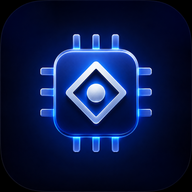

Silicon: Tech Tycoon
Questions about the game? We're here to help.
Email us at isacmolin@gmail.com
Name your company, then go to the Design Lab tab. Pick a category (start with Phone), choose components, set a price, and tap Build & Plan. Then launch when it's ready from the HQ tab.
Three common reasons:
Go to Settings (the gear icon, bottom-right) → scroll to Creative Mode → tap Restore purchase. Make sure you're signed in with the same Apple ID used for the original purchase.
If you had previously exported a backup: go to Settings → Import save and paste it back in. Unfortunately, if no backup was made and the app was uninstalled or site data was cleared, the save cannot be recovered — all data is stored locally on your device only.
Tip: tap Export save in Settings regularly to copy your save to your clipboard. Paste it into Notes for a safe backup.
Check the HQ tab — it shows your progress toward the era threshold (reputation + revenue). Hit the target, then tap Advance Era on the orange badge in the HQ screen.
An optional unlock ($2.99) that removes all financial limits so you can design and launch freely without worrying about going bankrupt. The base game is complete without it — Creative Mode is purely for players who want a stress-free playground.
After you take your company public (the final milestone), you can start a fresh company that inherits a Legacy Bonus — extra cash, reputation, fans, and research points at the start. Each run compounds the bonus, making each playthrough richer.
The 3D office requires WebGL. If your device doesn't support it (or has GPU restrictions), Silicon automatically falls back to a 2D illustrated office. It works fully either way. If the 3D scene was working and stopped, try restarting the app.
Yes — Silicon is fully offline. No internet connection is required at any time. Time still passes when you're away (up to 8 weeks of offline catch-up when you return).
If your question isn't answered above, email us directly. We reply within 1–2 days.
Email support